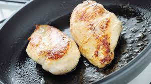

| POLLO | RICETTA | ||||||
|---|---|---|---|---|---|---|---|
|  | Valori nutrizionali Composizione in acidi grassi |
Preparare il pollo arrosto, per prima cosa legate il pollo in modo che dopo la cottura mantenga la forma. Prendete un elastico per cottura in forno, giratelo intorno alla parte finale delle coscette 1, stendetelo e giratelo dietro al petto 2, in modo da tenerlo fermo 3. Versate in un mixer il sale grosso, aggiungete l'alloro 4 e le altre erbe aromatiche: rosmarino, salvia e origano fresco 5. Unite anche 2 spicchi d’aglio pelati 6.Ricoprite con il trito aromatico 10, massaggiando con entrambe le mani su tutti i lati per farlo aderire bene 11. Condite anche l’interno del pollo con il trito aromatico 12. Cuocete il pollo in forno statico preriscaldato a 180° per circa un'ora. Di tanto in tanto nappate il pollo con il suo fondo di cottura 13. A metà cottura, tirate fuori dal forno il pollo e giratelo dall’altra parte 14, in modo che la cottura sia uniforme da entrambi i lati . Proseguite la cottura, nappando il pollo di tanto in tanto con il fondo. Trascorso il tempo di cottura, sfornate e servite il vostro pollo 15. Per assicurarvi che sia ben cotto potete misurare la temperatura al centro della coscetta, dovrà essere di 72°. |
|||||
| Composizione chimica | Valore per 100 g | ||||||
| ALLEVAMENTO INTENSIVO | ALLEVATO ALL'APERTO |
|
|
||||